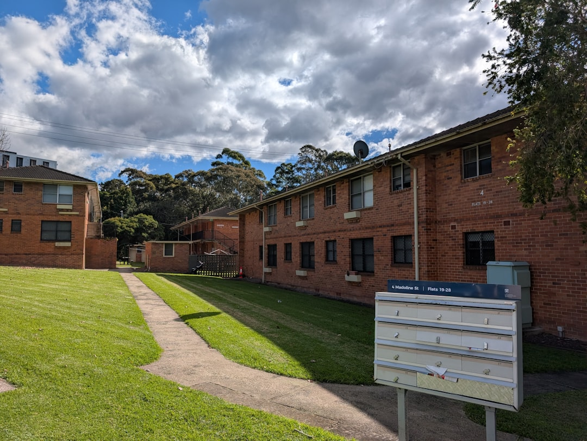

A Wollongong borrower should confirm no cost to enquire, no obligation to proceed, same day response aim, lender range, fee disclosure and loan type fit before sending full documents. The published page says options are compared across bank and non bank lenders, with guidance for first home buyers, refinancers, investors, construction borrowers, self employed applicants and people considering bridging finance.
For borrowers comparing mortgage brokers wollongong options, the useful question is who can explain lender fit, deposit pressure and approval steps clearly before a shortlist is chosen.
Mortgage Brokers Wollongong Explained
Home Loan Broker Wollongong presents the broker role as comparing loan options across bank and non bank lenders, then explaining the reasoning in plain language. A useful first discussion should establish the loan goal, income pattern, deposit or equity position, property plan and timing pressure before any rate comparison.
The published page separates first home buyers, refinancers, investors, construction borrowers, self employed borrowers and people considering bridging finance. Treat those as different files. A PAYG earner, ABN holder and investor using equity may need different evidence and a different explanation of lender fit.
- Ask how your income will be assessed.
- Ask which lender types are being compared.
- Ask what fee disclosure you will receive.
- Ask what could delay pre approval, full approval or settlement.
Who This Applies To
This guide is for Wollongong and Illawarra borrowers who need structured comparison rather than a single bank quote. It suits people buying a first home, reviewing an existing loan, investing, building a new home, consolidating debt through a home loan, considering bridging finance, or applying while self employed.
Use the loan type to shape the appointment. A first home buyer can ask how deposit options, the First Home Guarantee and NSW concessions are being considered. A refinancer can ask whether the review includes debt consolidation, equity release and future flexibility. An investor can ask how interest only and principal and interest structures are compared. A construction borrower can ask how progress payment lending is handled for a new build or house and land package.
For a second process view, the related home loan broker Wollongong guide maps broker questions against loan stages.
Broker Or Bank Direct
A direct bank conversation may suit a borrower who already wants that lender and has a simple application. A broker conversation is broader when the file is compared across multiple lender types and the reason for a recommendation is explained.
ASIC Moneysmart encourages borrowers to understand home loan features, costs and repayments before choosing a loan. Apply that discipline to a broker shortlist. Ask why a loan suits your file, what options were excluded, how the broker is paid and what documents the lender will need.
Local detail is useful only when it changes the lending question. The published page gives examples including a commuter upgrader in Thirroul, a first home buyer in Warilla and a house and land borrower in Horsley. The final assessment still depends on the applicant, property and lender policy.
Document Questions Before The Rate Question
The published page says the right loan depends on serviceability policy, income shape, deposit and plans. Bring those constraints forward instead of starting with the headline rate.
- Income: ask whether your file is treated as PAYG, contractor, self employed, alt doc or full doc.
- Deposit and equity: ask what options may be available and what costs or insurance may need to be considered.
- Property type: ask whether an established home, investment property or construction loan changes the shortlist.
- Repayment structure: ask how fixed rate, interest only, principal and interest, and bridging options affect the strategy.
- Timing: ask what happens before pre approval, loan approval, progress payment or settlement.
Debt consolidation needs careful questioning. ASIC Moneysmart home loan material points borrowers back to repayments and costs, so a consolidation discussion should include the trade offs, not only the monthly repayment.
Local Scenarios Worth Separating
The Illawarra angle is strongest where the borrower scenario changes the approval path. Construction lending is tied in the published page to new builds and house and land packages in the West Dapto corridor. Bridging finance is linked to buy before you sell situations in a tight coastal market. Self employed lending is framed around ABN holders, contractors and the region's trades workforce.
Ask scenario specific questions. A construction borrower should ask how progress payments are approved and what happens if the build changes. A bridging borrower should ask what sale assumptions the lender is using. A self employed borrower should ask which evidence will be accepted.
Property investors need a separate structure conversation. The published page names interest only versus principal and interest, serviceability caps and portfolio structure. ASIC Moneysmart property investment guidance also treats investment property as a financial decision involving costs, risks and cash flow.
- Define the loan goal. State whether you are buying, refinancing, investing, building, consolidating debt or seeking bridging finance.
- Prepare file basics. Gather income, deposit, equity, property and timing details before asking for lender options.
- Ask for comparison logic. Request a plain language explanation of why shortlisted lenders fit your income shape and plans.
- Confirm costs and payment. Ask whether any broker fee applies and how lender commission is disclosed.
- Check the next milestone. Clarify what happens before pre approval, full approval, progress payment or settlement.
| Route | Best fit | Questions to ask |
|---|---|---|
| Broker comparison | Borrowers who want multiple lender types assessed against income, deposit and plans | How are you paid, which lenders are considered, and why does this loan fit my file? |
| Direct bank | Borrowers who already prefer one lender or have a simple application | What alternatives are not being compared, and what happens if my file misses policy? |
| Specialist review | Self employed, construction, investor, bridging or debt consolidation borrowers | Which documents and timing points change because of this loan type? |
Common questions
Do local brokers usually charge a borrower fee? The published page says most Australian mortgage brokers are paid commission by the lender and do not charge a direct fee to standard home loan customers. It also says some may charge for complex lending or specialised advice, so ask for disclosure before proceeding.
Is a broker better than going straight to a bank? A broker can compare multiple lenders, while a bank offers its own loans. The better route depends on whether you need broader choice, document help, or a straightforward conversation with a lender you already prefer.
What should a first home buyer ask first? Ask how deposit options, the First Home Guarantee and NSW concessions are being considered for your situation. Also ask what documents are needed before relying on any pre approval.
Can a broker help with construction or self employed lending? The published page lists construction loans, residential construction, self employed home loans, alt doc pathways and full doc pathways among its service areas. Ask which documents and approval steps differ from a standard purchase.
This guide covers Wollongong broker comparison for buyers, refinancers, investors, builders and self employed borrowers.